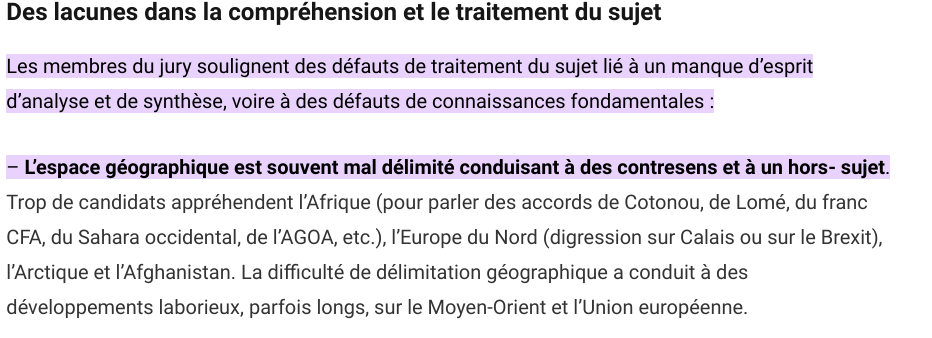
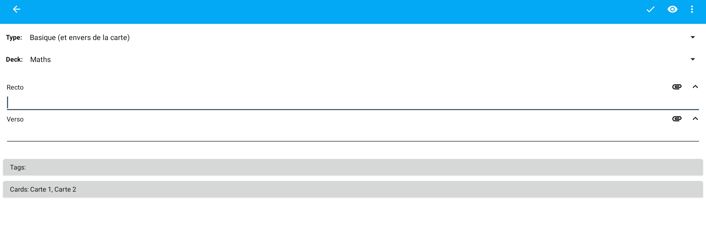
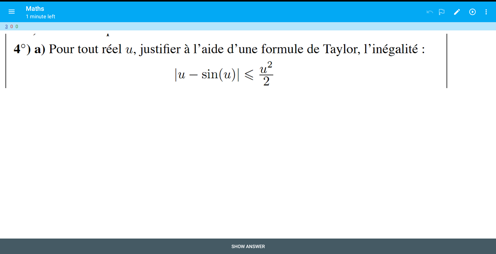
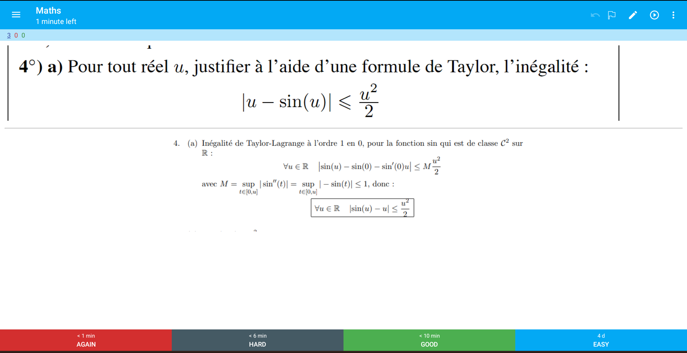
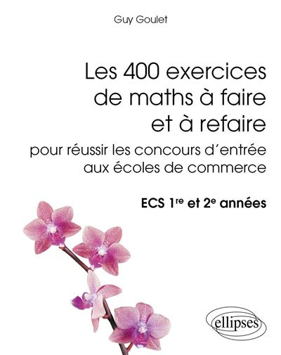
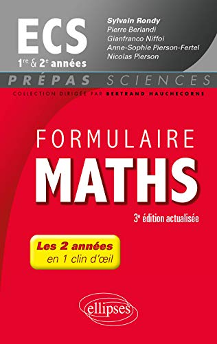
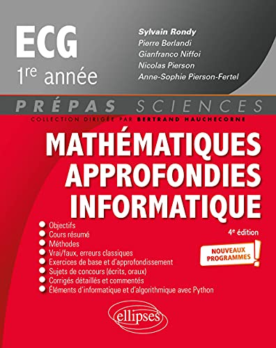

1-Mettre fin aux clichés:
Si tu penses que la géopolitique c'est avant tout une question de connaissances, saches que tu te trompes lourdement. Certes les connaissances ont leur rôle à jouer dans ta copie, toutefois si elles ne sont pas réutilisés stratégiquement, en avoir énormément peut se retourner contre toi. Mise à part le fait que ça peut te mener à la panique et au burnout car tu auras toujours l'impression de ne pas en savoir assez, avoir trop d'informations en tête empêche la réflexion (tu auras plus envie de montrer au correcteur que tu sais plein de trucs plutôt que de faire avancer clairement l'argumentation). Beaucoup de profs de prépa n'hésitent pas à te donner plusieurs chiffres et dates totalement superflus, mais ça sera à toi de faire le trie pour voir quelles informations seront utiles et lesquelles ne le seront pas. Le plus important est de maitriser à fond la méthodologie et de s'assurer de ne pas sortir de dingueries dès l'introduction. On verra dans le détail comment faire dans les sections suivantes mais pour l'instant dis-toi qu'il est inutile d'accumuler un tas presque infini de connaissances. Rassuré(e)? Alors passe à la suite.
2-Fais attention quand tu apprends ton cours
Beaucoup de profs t'inciteront à apprendre leur cours par coeur. Je ne te recommande pas de le faire, du moins pas de leur façon. Si tu suis leurs conseils, il est très probable que tes connaissances soient très segmentées. Si par exemple tu tombes sur un sujet sur la mondialisation, ton cerveau ira naturellement sur le cours de la mondialisation fouiller dans chaque tiroir pour ressortir toutes les informations du cours sans passer par les autres chapitres. Si sur un sujet sur la mondialisation , il n'y a pas mort d'hommes, prenons ce sujet géopo ESSEC 2020.
Le bassin méditerranéen : un espace de crises et de rivalités internationales depuis la fin de la guerre froide
Si tu utilises la même stratégie que pour le sujet sur la mondialisation ,ça risque d'être très très compliqué. Il faut que déjà que tu ressortes à minima 3 chapitres dans ta tête: Europe, Afrique, Moyen-Orient , mais en ne prenant en compte que le sud de l'Europe, le nord de l'Afrique et le nord-ouest du Moyen-Orient. Si tu avais du temps, ça serait peut-être jouable mais comme tu n'en a pas, ton cerveau va faire ce que tu lui a appris de faire, segmenter l'information. On se retrouve avec plusieurs copies avec des parties hors-sujets ou qui traitent de 2 continent mais pas du 3ème... (c'est la première remarque du
rapport de jury)

Les candidats ont appris leur cours par coeur mais ça ne les a pas empêchés de ressortir du concours avec une note médiocre. Comme leurs cours était sur l'Europe et non pas sur la méditerrannée ou le sud de l'Europe seulement, leur cerveau a eu beaucoup de mal à ne pas déborder sur toute l'Europe, ce qui a mener à des paragraphes hors-sujets ou à passer certaines dimensions importantes du sujet.
Et ce sujet n'est pas unique , si tu jettes un coup d'oeil aux récents sujets ESSEC ou HEC, tu verras que la plupart sont des sujets croisés (qui lient 2 notions ou plus). Si tu ne veux pas te retrouver dans la même situation , je te recommande de lire la partie suivante.
La bonne méthode
Pour éviter de segmenter tes connaissances, déjàa se rendre compte/ avant que le sujet commence voir les chapitres que tu peux utiliser. il est essentie

Je crée un deck math dans lequel je crée une nouvelle carte
Je prends en photo l'intitulé et je l'insère dans le recto de la carte puis je prends en photo la correction que j'insère dans le verso. Ensuite comme je me suis rendu compte que je connaissais pas bien mes inégalités de taylor, je crée aussi une autre carte. Le lendemain matin, j'ouvre mon deck de maths et voici le résultat:

Je n'ai plus qu'à refaire l'exo pour voir si je m'en rappelle, puis j'affiche la réponse. En fonction de comment je réussis, je n'aurais qu' à envoyer la carte dans une des 4 options en bas (PS: dans les options, on peut modifier la durée de répétition des cartes si jamais elle ne nous convient pas)

Et voilà, l'application va se baser sur mes réponses pour savoir quand me réafficher cette carte, je serais alors sûr de ne pas l'oublier
---Fin de l'exemple---
En dehors de ce temps, je passais beaucoup plus de temps à faire des exos et des sujets que d'apprendre mon cours. Je sais qu'il y'a pas mal de personnes qui préférent apprendre le cours par coeur avant de se lancer dans les exos. Mais personnellement j'ai toujours eu du mal avec la théorie, et regarder directement comment le cours s'applique m'aidait beaucoup mieux à le comprendre que passer des heures à apprendre des propriétés qu'on ne comprends pas toujours et des démos. Libre à toi de voir quelle optien te convient le mieux.
Quand je faisais des exos, je ne m'attardais pas énormément à réflechir à la solution (pas plus de 10 min), comme je te l'ai dit le but est d'apprendre le plus vite, non pas de chercher pendant des heures (tu n'auras de toute façon pas le temps le jour des concours). Ça sera plus productif d'apprendre la méthode de résolutions de 5 exos en une heure plutôt que de la passer à réfléchir sur un exo combien même tu trouves la solution au finale.
Enfin, je te donnerai les ressources que j'ai utilisées à la fin de la page, mais au fil de l'année je n'ai pas hésité une seule seconde à faire des sujets maths parisiennes. Certains retardent le processus, craignant qu'ils ne soient pas assez prêts. L'erreur est de se dire que si on a du mal avec des sujets maths EDHEC/EML, on ne devrait pas essayer de faire des sujets parisiennes. En réalité le format est très très différent et si tu ne t'habitues pas à en faire, même en préparant autant que tu veux tu risques d'avoir des mauvaises surprises aux concours. Autrement dit, n'aie pas peur de faire des sujets maths parisiennes même si tu penses ne pas avoir le niveau,car il n'y aura jamais de moment parfait pour commencer. Essaye seulement d'apprendre les questions qui tombent et retombent et aussi te familiariser au format et aux thèmes qui peuvent retomber d'années en années. Au final,le plus important c'est d'enlever cette barrière mentale qui apparait lorsqu'on te dit "sujet maths HEC" pour qu'elle ne puisse pas te porter préjudice aux concours.
Étude de cas:
L'erreur est de se lancer tête baissée et de commencer directement à faire le sujet et ça veut surtout dans les sujets maths parisiennes. Dans le chapitre 2, je t'ai montré l'importance d'établir une stratégie pour les concours. Mais ça vaut également pour les D.S, avant de te jeter dans le tas, il faut qu'en amont tu réflechisses stratégiquement à comment procéder. La première étape est de prendre 5 à 10 min pour lire tous les exos. Je pense qu'on te l'a déjà dit mais il est très important que tu établisses pendant ce laps de temps ta stratégie pour le DS: aka l'ordre des exos que tu vas attaquer et le temps maximum que tu laisses à chacun (il vaut biensûr prendre les exos où tu penses répondre aux plus de questions histoire de te mettre en confiance et éviter la panique). Ensuite, une fois que tu sais par quelles exos tu vas commencer et par lesquels tu vas finir, prends ceux que tu vas faire en dernier où que tu penses ne pas avoir le temps de faire et essaye de chercher s'il n'y a pas des points à aller gratter (crois moi que n'importe quel point coefficient 11, ça peut tout changer...) et surligne les , tu les laisseras pour les dernières minutes. Quand tu auras réalisé toutes ces étapes, tu peux enfin commençer à répondre aux questions en suivant ta stratégie.
Mention supplémentaire pour les maths parisiennes, généralement il n'y a pas d'exos mais de longs sujets avec plusieurs parties. Si ces parties sont indépendantes alors tu peux procéder de la même façon, mais si les parties sont dépendantes, alors tu n'as pas le choix, il te faudra suivre l'ordre établi. Je te recommande tout de même d'aller lire les questions dans les dernières parties et essayer de chercher les points à gratter, tu les traiteras lors de la dernière heure/demi-heure en fonction d'où tu en es. Dans ces sujets là, il est très valorisé de terminer une partie entière, mais si tu n'y arrives pas ça ne sert à rien de rester coincer des heures dans cette partie, il faut que tu ailles chercher des points ailleurs. Si ton point fort n'est pas la réflexion, essaye de chercher toutes les questions auxquelles tu peux répondre (questions de calcul, classiques, questions de cours) et rédige les proprement, crois moi que c'est déjà suffisant pour t'assurer la moyenne. De manière générale, si au bout de 5 minutes passées sur une question, tu n'as toujours aucune piste, passe à la suivante, à part si elle est capitale pour le reste du D.S.
Je te recommande également, dans le cas où c'est possible, de ne pas commencer le D.S par des questions trop calculatoires (c'est un gros piège qui tombe souvent aux concours), car ça va te demander un temps fou et si jamais tu ne trouves pas le résultat demandé, ça te mettra en situation de panique totale dès le début, il vaut donc mieux y revenir quand tu auras bien entamé le D.S.
Enfin pendant l'année, ne néglige pas python. Si tu n'es pas très bon en maths, ça peut être une mine d'or car c'est généralement super valorisé de les faire car peu de candidats s'attaquent à cette partie. Malheuresement certaines questions python te demanderont de répondre aux questions précédentes mais s'il s'agit d'une partie indépendante alors c'est le jackpot! Mais dans tous les cas, vue le nombre de sujets de maths que tu vas traiter aux concours, je te laisse imaginer le nombre de points que tu peux récuperer. Si tu as encore du temps pour les concours, je te conseille fortement de t'y attaquer sérieusement (si tu as du retard, essaye de trouver un livre qui peut tout récapituler) car ça peut te laisser une très bonne image auprès des correcteurs.
Mes ressources
400 exos de maths à faire et à refaire:

Pour moi ce livre est le saint graal. Il contient un nombre important de questions classiques qui tombent et retombent aux concours (on peut même y retrouver certains sujets EDHEC et EML). Associé à ma méthode Anki,c'est ce qui m'a permis de progresser sensiblement en maths. Je ne peux que te le recommander.
PS: L'erreur que font certains est de faire l'exercice qu'une seule fois ou deux pour passer à la suite au lieu de vraiment l'apprendre. C'est pour ça que l'utiliser avec Anki à côté est selon moi une très bonne stratégie
, Cossuta
Site formidable qui contient tous les sujets depuis 1980 à 2013 accompagné de leurs corrections ainsi que plusieurs exos et le tout gratuitement
SujetsHatat
Pour les sujets et leurs corrections après 2013
Formulaire Maths ECS
Assez pratique pour se rappeler de certaines propriétés de cours
Le livre rouge
Ce livre est assez pratique lorsqu'on découvre un chapitre mais ne jamais se limiter qu'à ça.
,